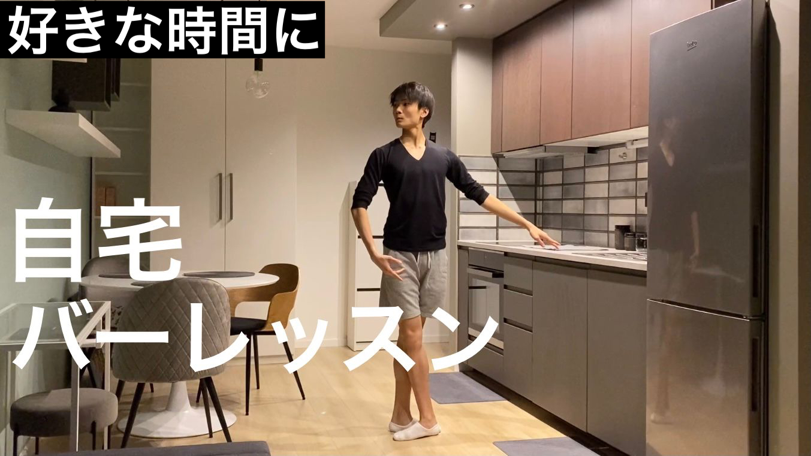

Youtubeメンバーシップについて
僕はヨーロッパで働いているプロバレエダンサーの後閑飛雄馬です。
ヒューマ日記 Hyuma's diary というユーチューブチャンネルで、主にバレエに関する動画を投稿していています。
そしてユーチューブメンバーシップも始めました。
ヒューマ日記 Hyuma's diary というユーチューブチャンネルで、主にバレエに関する動画を投稿していています。
そしてユーチューブメンバーシップも始めました。
メンバーシップ内容
メンバーシップでは、毎週月曜日におうちバレエレッスン動画を配信します。
他にも、バレエや留学に関する真剣な質問にも丁寧に答える動画を投稿したり
バレエが好きな人が情報交換などもできるようなコミュニティにしていきたいと思っています。
不定期にはなりますが、オーディションにまつわる動画や、カンパニーの舞台裏側などもメンバーシップで限定配信していきます。

他にも、バレエや留学に関する真剣な質問にも丁寧に答える動画を投稿したり
バレエが好きな人が情報交換などもできるようなコミュニティにしていきたいと思っています。
不定期にはなりますが、オーディションにまつわる動画や、カンパニーの舞台裏側などもメンバーシップで限定配信していきます。
メンバーシップを始めようと思った経緯
僕は14歳でスイスに留学するまでは、毎年夏休みや冬休みにさまざまな団体が主催するバレエの講習会やワークショップに参加していました。
小学生の時に開催期間が一週間から10日ほどの講習会に参加したこともあり、有名なバレエダンサーさんのクラスにも何度も参加した経験があります。
たくさんの講習会、ワークショップに参加し気づいたことはバレエを上達するには継続しないといけないということでした。
その講習会の期間は刺激をもらえて有意義な時間でしたが、一週間という短い期間ではすぐにもとの踊りの癖に戻ってしまいました。
僕が一番成長をする事ができたのはオープンクラスというものを知り、フリーパスチケット(1ヶ月、1日2レッスン受けられるチケット)を購入したくさんのクラスを受けた時でした。
素晴らしい先生方のクラスを一ヶ月間毎日2から3レッスン受けて、僕は成長を強く感じました。
当たり前のことなのですが、バレエの基礎を身につけ美しい体のラインを作るには毎日練習を継続することが大切です。 そこで僕は
家庭でレッスンの無い日でも動画を観ながら一緒にいつでもできるおうちレッスン動画の配信をしようと思いました。
僕自身もこの動画を作り配信する事によって、成長していきたいと思っています。
小学生の時に開催期間が一週間から10日ほどの講習会に参加したこともあり、有名なバレエダンサーさんのクラスにも何度も参加した経験があります。
たくさんの講習会、ワークショップに参加し気づいたことはバレエを上達するには継続しないといけないということでした。
その講習会の期間は刺激をもらえて有意義な時間でしたが、一週間という短い期間ではすぐにもとの踊りの癖に戻ってしまいました。
僕が一番成長をする事ができたのはオープンクラスというものを知り、フリーパスチケット(1ヶ月、1日2レッスン受けられるチケット)を購入したくさんのクラスを受けた時でした。
素晴らしい先生方のクラスを一ヶ月間毎日2から3レッスン受けて、僕は成長を強く感じました。
当たり前のことなのですが、バレエの基礎を身につけ美しい体のラインを作るには毎日練習を継続することが大切です。 そこで僕は
家庭でレッスンの無い日でも動画を観ながら一緒にいつでもできるおうちレッスン動画の配信をしようと思いました。
僕自身もこの動画を作り配信する事によって、成長していきたいと思っています。
対象者は、
- 学生さんから大人までのバレエをやっていて自宅でも自主練習をしたいと思っている方。
- 自宅でもバレエを取り入れた動きで運動をしたいと考えている方。
- バレエに興味はあるけど始めるきっかけを掴みたいと思っている方。
- 日頃のレッスンの復習をしたいと考えている方。
- 自宅でも練習をしてバレエをもっと上達したい方。
- 運動不足を解消し筋力を向上したいと考えている方。
などなど誰でも気軽に始められるような内容にしていきます。
その他にもバレエに関する質問に答える動画や、メンバーシップ限定動画も不定期ですが配信していきます。
その他にもバレエに関する質問に答える動画や、メンバーシップ限定動画も不定期ですが配信していきます。
金額と加入方法
金額は月々490円です。
学生さんでも自分のお小遣いの中で払える金額で、継続してもらいたいのでこの金額に設定しました。
学生さんの親御さんにもご理解いただけたらと思います。
メンバーシップに入るには、パソコンで僕のチャンネルを開いて頂き、メンバーになるというボタンがあるのでそれをクリックして進んでください。
スマホで行う場合はyoutubeをPC画面にして表示する必要があります。その方法を説明します。
google chromeでYouTubeを検索してyoutube画面を開いて頂き、一番右下にある三つの点のボタンをクリックして(PC版サイトを見る)をクリックしてください。するとPC画面で表示されたはずです。
そこから、僕のチャンネルを検索してもらうとメンバーになるというボタンが表示されているはずです。
それでもメンバーシップに入れなかった方や分からない方は、こちらの動画 を参考にすると良いと思います。
学生さんの親御さんにもご理解いただけたらと思います。
メンバーシップに入るには、パソコンで僕のチャンネルを開いて頂き、メンバーになるというボタンがあるのでそれをクリックして進んでください。
スマホで行う場合はyoutubeをPC画面にして表示する必要があります。その方法を説明します。
google chromeでYouTubeを検索してyoutube画面を開いて頂き、一番右下にある三つの点のボタンをクリックして(PC版サイトを見る)をクリックしてください。するとPC画面で表示されたはずです。
そこから、僕のチャンネルを検索してもらうとメンバーになるというボタンが表示されているはずです。
それでもメンバーシップに入れなかった方や分からない方は、こちらの動画 を参考にすると良いと思います。
YouTubeチャンネルでもメンバーシップについての動画を投稿したのでこちらも是非チェックしてみてください。